AKKERBOUW Flevoland
De Flevolandse kleigronden zijn de jongste kleigronden. Aanvankelijk zeer productief, maar de hoeveelheid makkelijk verteerbare organische stof verdween geleidelijk. Geringere stikstoflevering en structuurproblemen namen toe. De bodemvruchtbaarheid gaat nog steeds achteruit. De mate van inzicht dat er wat gedaan moet worden neemt evenwel toe. Flevoland is toonaangevend op het gebied van werken aan bodemkwaliteit.
INHOUD
InleidingDe bodemHet geheim van Flevoland: de ondergrondDe bodemstructuurPlassen op het landWormenproblemenMaatregelenLiteratuur
InleidingDe gronden van de Flevopolders zijn uniek. Uniek wat betreft ontstaanswijze, maar ook wat betreft eigenschappen. Het zijn heel jonge gronden. Waar ter wereld vind je zoiets, ook op zo grote schaal? Het zijn kalkrijke zavel- en kleigronden en die treffen we ook in Zuidwest- en Noord-Nederland aan, maar de Flevogronden zijn toch anders. Ze zijn anders omdat:
- de organischestofgehalten relatief laag zijn;- er minder dan elders een verdichte laag onder de bouwvoor zit;- er bijna steeds wat grotere poriën naar de ondergrond gaan waardoor wortels kunnen groeien en het gehele groeiseizoen water op kunnen nemen.
De combinatie van deze eigenschappen geeft een specifieke groei. De gewassen zijn relatief ijl en de eenzijdige groei maakt dat ze moeilijk tot afrijping komen. Wanneer hier bij de teelt niet duidelijk rekening mee wordt gehouden, scoren ze op het gebied van smaak niet hoog.
De enorme groeikracht wordt al zichtbaar in de bossen. De essen, die hier thuishoren, vertonen een sterke hoogtegroei. Eronder ontwikkelt zich een weelderige brandnetelvegetatie.
-1920w.jpg)
Essen in het Larserbos bij Lelystad in het voorjaar. Weelderige groei van bomen en brandnetels
De bodem
De bovenlaag is in het algemeen geploegd. Kenmerkend voor Flevoland is dat onder de geploegde bouwvoor de grond gelaagd is. De gelaagdheid wordt veroorzaakt door verschillen in zwaarte en door verschillen in organischestofgehalte. De gelaagdheid belemmert de beworteling sterk, maar door de aanwezigheid van grove poriën kunnen wortels toch wel dieper de grond in. Plaatselijk bevindt zich een schelpenlaag op 25 tot 30 cm diepte die ook remmend kan zijn voor de beworteling.
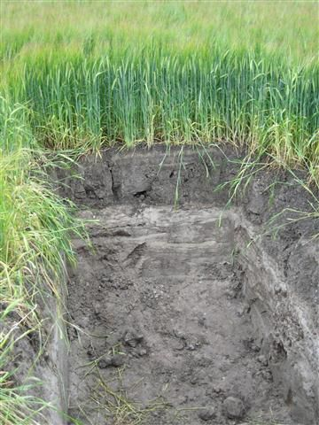
Tarwe, Elandweg bij Lelystad
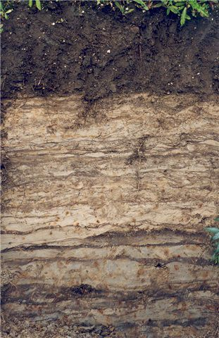
Lichte zavelgrond ten noorden van Lelystad
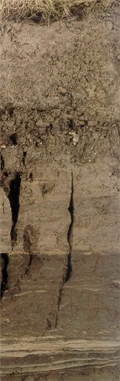
Profiel kort na de inpoldering in de Noordoostpolder. De scheuren in de grond laten zien dat de ongerijpte klei door waterverlies minder ruimte nodig heeft.
Het geheim van Flevoland: de ondergrond
De ondergrond is gelaagd en vaak moeilijk doorwortelbaar, maar door de poriën kunnen de wortels toch dieper de grond in. Dit verschijnsel op zo grote schaal zien we niet bij de zeekleigronden elders in Nederland. De poriën zijn onder meer gevormd door riet in de ontginningsfase en later ook door pendelende wormen.euwe alinea
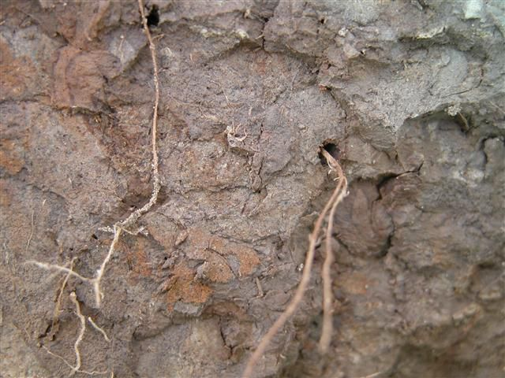
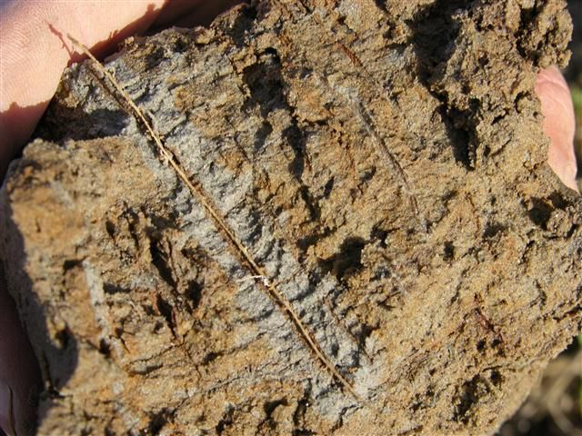
Rond de wortelgang is vaak roest aanwezig. Verder van de wortelgang is de grond luchtarm en is het opgeloste ijzer gereduceerd en wordt de grond blauw. Bij de wortelgang kunnen bacteriën profiteren van afgestorven wortels en dit als voedsel gebruiken. Door het gereduceerde ijzer met behulp van lucht in de gang te oxideren winnen ze energie. Het geoxideerde ijzer wordt als bruine roest zichtbaar.
De bodemstructuur
Tot het eind van de vorige eeuw was het moeilijk om blauwe plekken in de grond te vinden. De nieuwe eeuw gaf een heel ander beeld. Overal zijn ze nu in Flevoland te vinden. Blauwe plekken ontstaan wanneer de grond verdicht is. Het geoxideerde bruine ijzer verbindt zich met zwavelhoudende eiwithoudende verbindingen waardoor een blauwe kleur ontstaat. De typische rotte eierenlucht is hier ook waar te nemen. De blauwe plekken hangen samen met veranderde omstandigheden:
- De machines worden zwaarder en verdichten meer.- Er worden meer hakvruchten geteeld met intensievere grondbewerking.- Er worden minder granen en grassen verbouwd die organische stof leveren voor het bodemleven en de bodemstructuur verbeteren.- Het oogsttijdstip wordt later door nieuwe rassen, waardoor de oogst onder nattere omstandigheden plaatsvindt. Een akkerbouwer: “Vroeger waren we op 20 september klaar met de aardappeloogst, nu beginnen we op 20 september”.- Sinds 1998 gaat de oogstperiode vaker samen met veel regenrijke dagen.
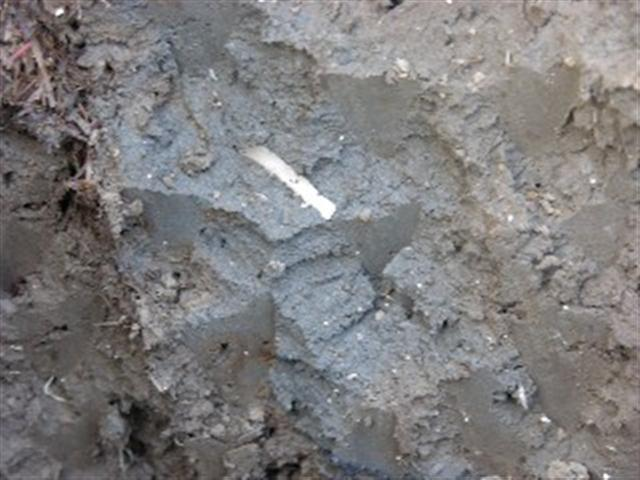
Ondanks poriën toch te weinig lucht en blauwe anaerobe plekken
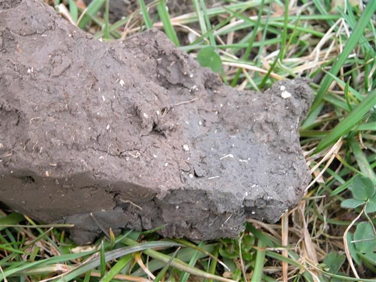
Rechts een luchtarme plek die door de wortels gemeden wordt
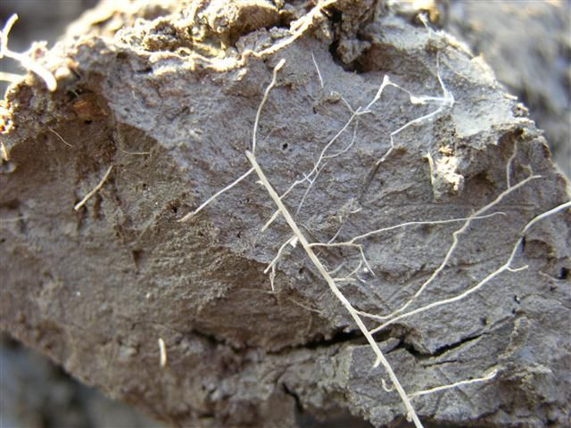
Tussen sterk verdichte kluiten kruipen de wortels. Ze hebben evenwel zeer weinig contact met de bodem, waardoor opname van voedingsstoffen belemmerd wordt.
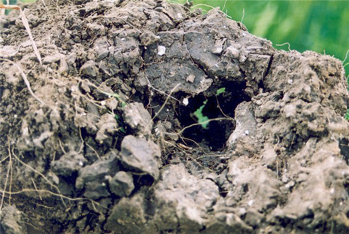
Na ploegen is de grond door massieve kluiten niet ingezakt en ontstaan er gaten in de grond
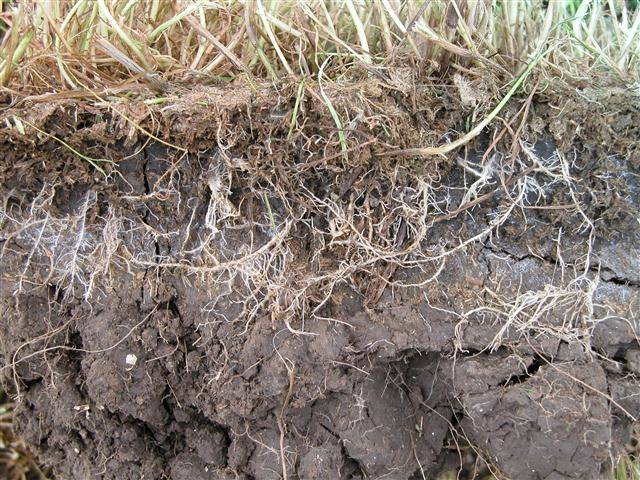
De wortels van gras zoeken op deze zware klei bij Zeewolde de scheuren op die in de zomer ontstaan
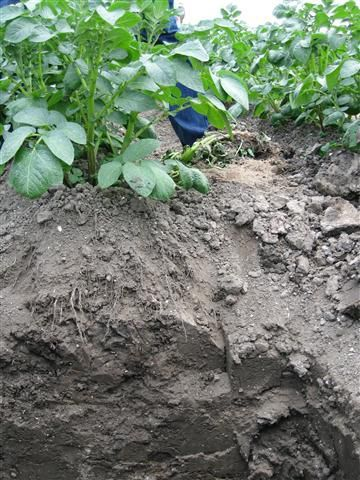
Aardappels wortelen in de rug, maar daaronder niet meer
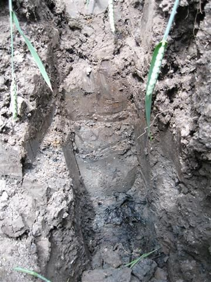
Onder de bouwvoor sterke verdichting met blauwe plekken.
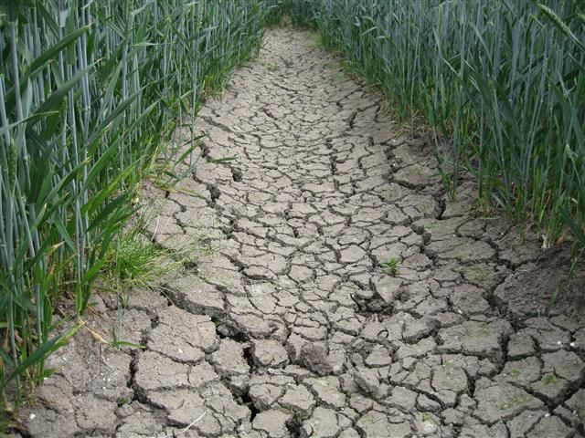
Na diepploegen om veen omhoog te krijgen ter verhoging van het organischestofgehalte ontstaat deze bizarre situatie bij Zeewolde in Zuidelijk Flevoland.
Plassen op het land
Zonder een kuil te graven is in een natte periode eind augustus ook te zien dat de bodem verdicht is. In de zomer is de grond warm en bacteriën gaan dan aan de slag en putten de zuurstofvoorraad snel uit. De stoffen die dan ontstaan (H2S, NH3) zijn zeer schadelijk voor de plantengroei. Plassen op het land in de winter geven aan dat er verdichting is. Die is schadelijk voor de groei in het komende seizoen, maar de vorming van schadelijke stoffen treedt dan niet of minder op. Op de volgende foto’s een rondgang door Flevoland in augustus 2010.
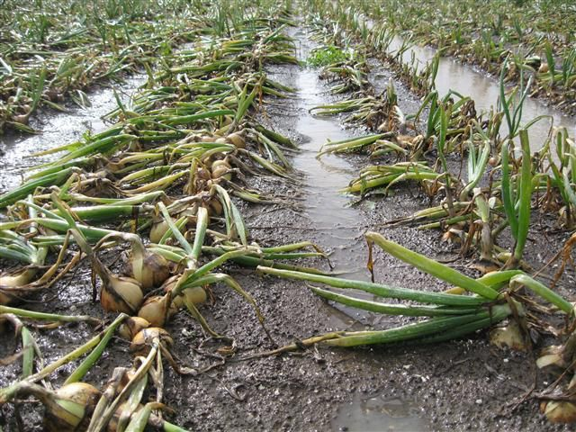
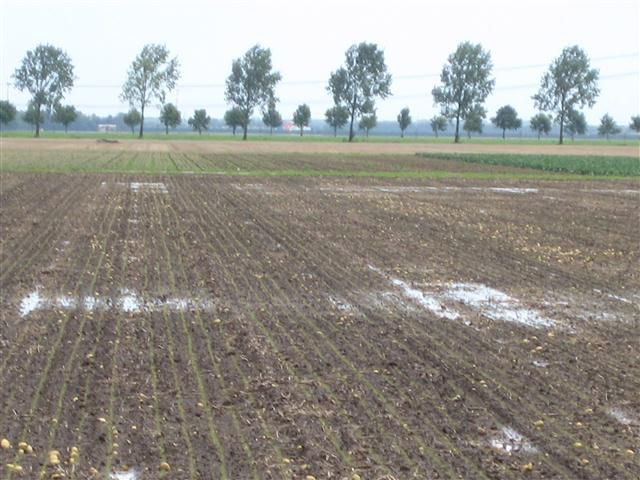
Wormenproblemen
Na een aantal jaren met minder problemen is na 2011 het wormenprobleem op veel bedrijven weer opgedoken.Het probleem- Er zijn problemen met de oogst van ui, aardappel en suikerbiet op vooral de wat zwaardere gronden. Met de aardappels komen veel kluiten mee en soms moet er beregend worden alvorens geoogst kan worden.- Er zijn problemen met de kwaliteit, bijvoorbeeld kale of gebarsten uien- De zaaibedbereiding en onkruidbestrijding worden moeilijkerDe oorzaakDe bodemstructuur gaat achteruit door nieuwe teeltomstandigheden (zie ‘4. De Bodemstructuur’).Tegelijk zijn er hoge opbrengsten en komt er vooral via het loof veel wormenvoer in de grond. Door de verdichte bodem en omdat daar veel voer is, ontwikkelt zich een zeer grote wormenpopulatie in de bovenlaag van de grond. De wormen scheiden veel lijmstoffen uit die de grond onder droge omstandigheden doen verkitten.De afname van het gebruik van bestrijdingsmiddelen die wormen doden, speelt waarschijnlijk ook een rol.
De oplossingMinder rooivruchten telen en minder grondbewerking onder ongunstige omstandigheden (bijvoorbeeld vaste rijpaden) is de oplossing, maar slechts enkelen lukt het deze maatregelen toe te passen. De bodemstructuur verbeteren door toedienen van calciumrijke stoffen als gips of ongebluste kalk heeft, op enkele uitzonderingen na, geen voldoende effect. Op enkele tientallen bedrijven is er voorlopig nog geen uitzicht op een oplossing.
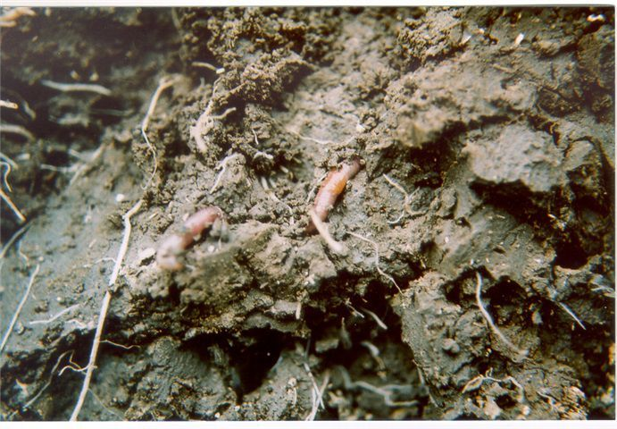
Aporrectodea callginosa, Nederlands meest voorkomende worm, is de belangrijkste veroorzaker van de structuurproblemen. Deze eet zich door de grond heen. Normaal is dat zeer gunstig voor de bodemstructuur, maar wanneer dat te intensief gebeurt, versmeert de grond.
-1920w.jpg)
Aardappels op een perceel met grote oogstproblemen bij Dronten. In de dunne bovenlaag veel wormen; daaronder de sterk verdichte grond.
Maatregelen
Hier wordt alleen op maatregelen ingegaan die specifiek zijn voor de akkerbouw in Flevoland. Algemene maatregelen worden behandeld in “Maatregelen bodemonderhoud”.
Mest en compost1. GFT- en groencompostOmdat de organischestofgehalten lager worden, wordt er wel compost gebruikt. Onderzoek wijst uit dat dit vooral effect heeft, wanneer er meerdere jaren redelijke hoeveelheden worden gebruikt. Bij compost gaat het om de bijdrage aan de organischestofvoorziening en om voeding van het bodemleven. GFT-compost heeft de voorkeur boven groencompost. Doordat uit de grondstoffen voor groencompost steeds meer het houtige materiaal wordt verwijderd, omdat het gebruikt wordt voor energiewinning, gaat de kwaliteit van groencompost achteruit. Het wordt steeds meer humusrijk zand, wordt wel gezegd.Wat betreft humusopbouw, regelmatige levering van voedingsstoffen en voeding van het bodemleven is vaste mest op de Flevolandse gronden superieur. Laat het een seizoen liggen en zet het driemaal om met een kraan. Helaas is het steeds moeilijker verkrijgbaar. Meer over mest en compost vindt u hier
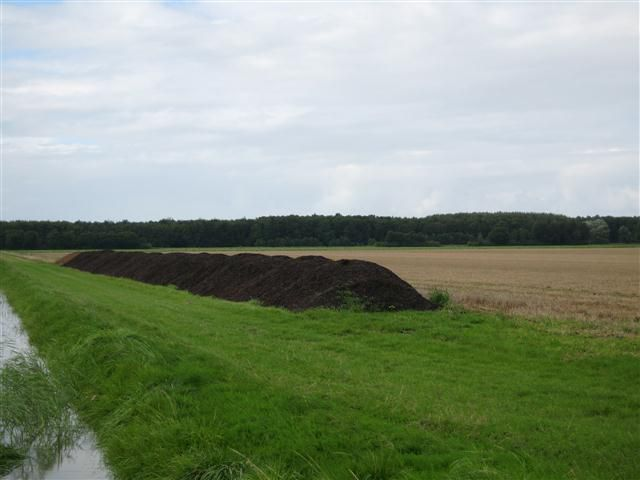
2. NatuurcompostIn Flevoland zijn meerdere natuurgebieden die periodiek gemaaid moeten worden. Het materiaal leent zich uitstekend voor composteren. Meerdere technieken zijn uitgetest. Verhakselen en enkele malen met een kraan omzetten is een mogelijkheid. Ook zijn er speciale composteermachines die over de rillen rijden en een mooi product afleveren. Bij composteren op grond treedt er geen verontreiniging van het oppervlaktewater van betekenis op. Gebruik van maaisel uit de regio is een mooi regionale bijdrage aan milieu, bodemvruchtbaarheid en klimaat. Het composteren op grond wordt daarom vaak toegestaan. Soms wordt toch beoordeeld dat er een conflict met de wetgeving is.
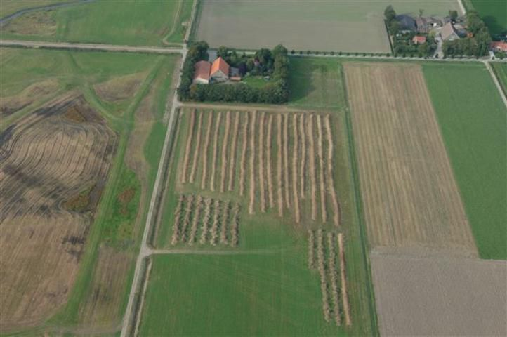
Compostering van maaisel uit de natuurgebieden rond Schokland. De rillenmethode waarbij aeroob gecomposteerd wordt met een composteermachine wordt hier toegepast.
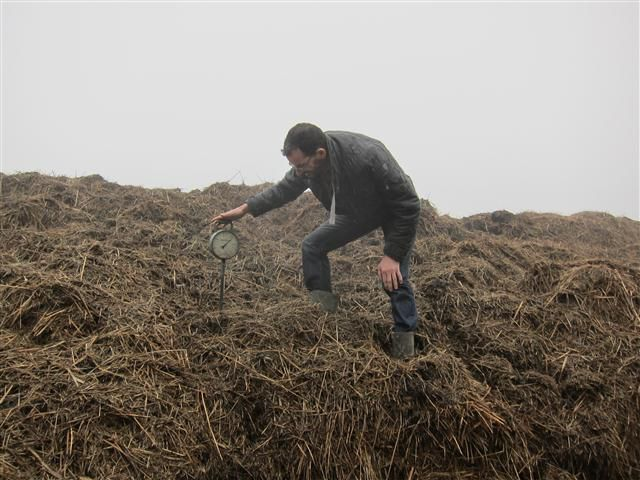
Volgen van de temperatuur tijdens het composteren van maaisel.
Vaste rijpadenHet werken met vaste rijpaden in combinatie met RTK-GPS is in Flevoland voor het eerst in de biologische teelt toegepast. Het vindt plaats op grotere bedrijven of in een samenwerking tussen bedrijven omdat de investeringskosten op kleinere bedrijven te hoog zijn. Vaste rijpaden leidt tot een betere bodemstructuur, hogere opbrengsten, meer werkbare dagen, minder onkruid en een hogere meststofefficiëntie. Desondanks zijn de financiële voordelen nog niet goed duidelijk. Oogsten vanaf vaste rijpaden is nog een probleem. Machines die dit wel kunnen zijn in ontwikkeling.
-1920w.jpg)
Trekker voor werken op vaste rijpaden op 3,20 m afstand tussen de wielen op een biologisch bedrijf bij Ens
WoelenZwaardere machines verdichten de grond, de grond blijft dan langer nat en bij opnieuw berijden wordt de grond onder nog weer nattere omstandigheden bewerkt. In de laag onder de bouwvoor kan de grond zo sterk verdichten dat de gewasgroei er aanzienlijke schade van ondervindt. De verdichte laag loswoelen lijkt dan een oplossing, maar meerdere onderzoeken over vele jaren gaven aan dat dit niet helpt en soms extra schade oplevert. Een uitvoerig onderzoek van PPO van 2006 tot 2009 (van Geel e.a. 2009) had als doel dit onderwerp degelijk uit e zoeken.Op een grond bij Lelystad met 14% lutum en 3,4% organische stof en een sterk verdichte laag tussen 25 en 40 cm werden onderstaande bodembewerkingen vergeleken (foto’s PPO):
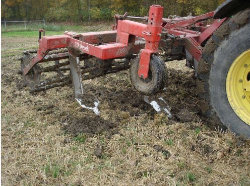
Woelen met een gewone woelpoot
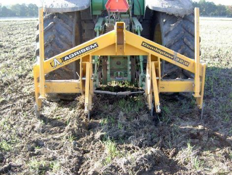
Woelen met de combiplow
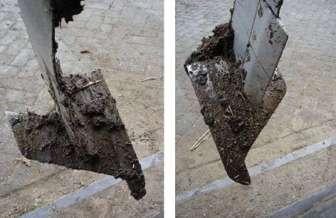
Woelen met de combiplow
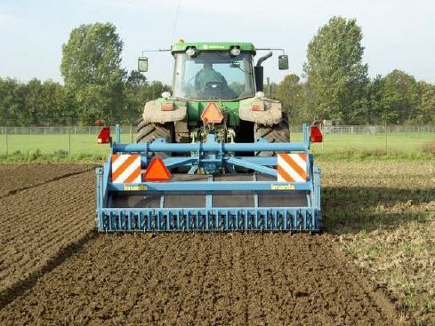
En spitten met een spitmachine
De grond werd tot ca 45 cm losgemaakt. Deze gewassen werden vergeleken: luzerne, wintertarwe, aardappel en suikerbiet.Het bleek dat de grond na de behandeling weer sterk verdichtte en er geen hogere opbrengsten waren. Luzerne was ook niet in staat om de losgemaakte grond te bewortelen. De penwortel liep al snel vast.
De mechanische weg is mogelijk niet de goede. Stimulering van regenwormen, veel aandacht voor de bodem bij het kiezen van een bewerkingstijdstip en minder hakvruchten in het bouwplan zijn alternatieven. Een woeler die meer kerend werkt en inbrengen zodat de grond niet weer inklinkt en het gebruik van compost of ander organisch materiaal in de laag 15 tot 40 cm hebben mogelijk perspectieven. DiepploegenDe belangrijkste reden om diepploegen toe te passen is de afname van de bewerkbaarheid. De oorzaak van de minder goede bewerkbaarheid ligt vooral bij:
-teelt van te weinig graan en groenbemesters;-toename van de bodemdruk door zwaardere machines;-toename van de bewerkingsintensiteit.
Wanneer de teeltwijze niet verandert, is diepploegen maar een tijdelijke oplossing voor de problemen. Naast de slechter wordende bewerkbaarheid speelt evenwel ook een rol dat er vaak lichtere grond onderin het bodemprofiel aanwezig is die naar boven geploegd kan worden. Hierdoor worden er op zwaardere grond meer teelten mogelijk.
De resultaten van diepploegen zijn wisselend. Grote problemen en sterke verbetering komen beide voor. Gunstige ervaringen zijn er door:-minder gebruik van diesel door minder bewerkingen;-minder arbeid doordat er sneller kan worden gewerkt;-hogere opbrengsten;-mogelijkheid voor meer teelten;-minder wormproblemen.
Minder gunstige ervaringen zijn er door:-een minder goede ontwatering;-grotere stuifgevoeligheid;-meer bodemgebonden ziekten;-meer verslemping door fijner zand in de bovenlaag;-ontstaan van een verdichte laag;-minder goede productkwaliteit, hogere sorteerkosten, vooral op zwaardere gronden;-fosfaattekort;-zoutschade.
Alvorens de beslissing te nemen om te gaan diepploegen is een analyse ter plekke door een deskundige belangrijk. Deskundigheid op dit gebied is schaars. Door het opheffen van de Rijksdienst IJsselmeerpolders in 1989 is veel kennis verloren gegaan.Veel problemen kunnen voorkomen worden door na het diepploegen direct te draineren. en dit bij plaatselijke verzakking van de buizen na bijvoorbeeld vier jaar weer te herhalen. Een ander belangrijk punt is om het bouwplan - tenminste tijdelijk - aan te passen. Niet 1op 3 aardappels, maar bijvoorbeeld 1 op 5. En voldoende gras of graan. Daar draait alles om. In het eerste jaar ook geen ui, peen of aardappels telen, maar vochtonttrekkende gewassen als tarwe en suikerbiet.
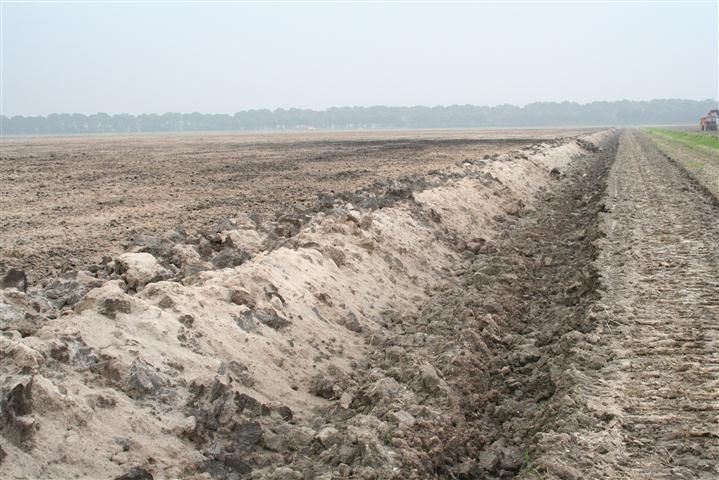
Perceel bij Biddinghuizen dat gediepploegd wordt. Zand is naar boven gekomen en de zware zavel is in diepere lagen terecht gekomen.
Voorbeelden van diepploegen op bedrijven
We gaan kijken bij de Firma Breg aan de Zeebiesweg in Biddinghuizen.
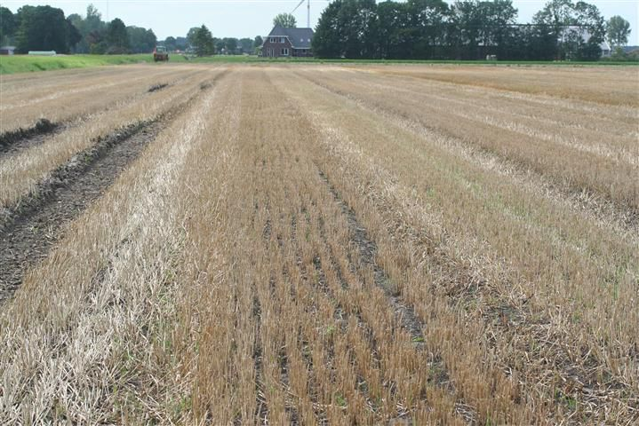
Wintertarwe op een gediepploegd perceel bij de Firma Breg aan de Zeebiesweg in Biddinghuizen. Na de oogst is compost opgebracht.
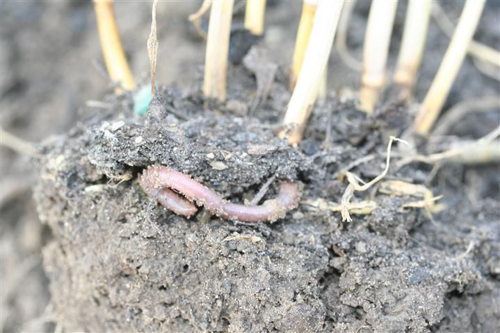
Aan de oppervlakte zijn regenwormen massaal bezig de compost de grond in te werken.
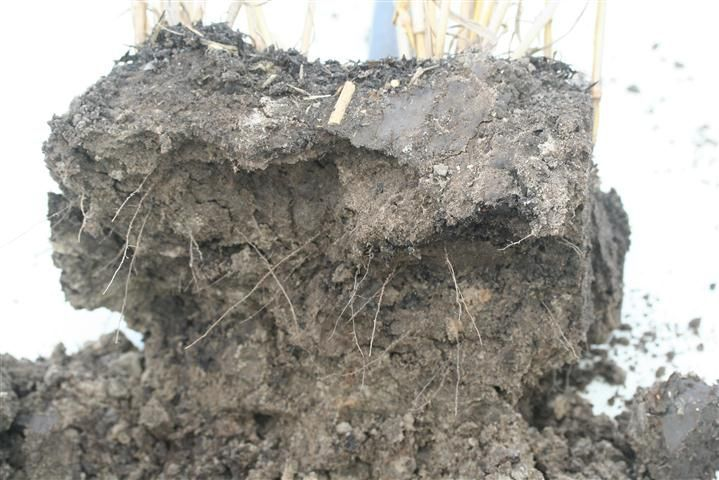
De tarwe wortelt alleen zeer ondiep.
Wat hebben we gezien?Na het diepploegen is een zeer humusarme grond ontstaan die zeer weinig wortels bevat. Aan de oppervlakte maken regenwormen een zeer mooie organischestofrijke grond met een goede structuur.
Hoe nu verder?Dien regelmatig compost toe en teel organischestofleverende gewassen zoals tarwe of grassen. Dat de tarwe nu nog weinig wortels maakt geeft aan dat er nog een lange weg te gaan is.Voor wie overweegt om te gaan diepploegen: denk goed na over de zeer arme grond die ontstaat. Regelmatig heeft men spijt van de keuze tot diepploegen. Bodembedekking
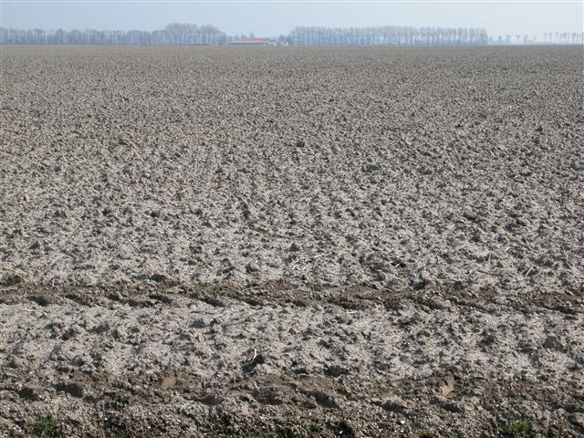
Grote oppervlaktes liggen in de winter kaal. Voor de bodemstructuur is dit schadelijk. Vooral binnen het onderzoek naar Niet Kerende Grondbewerking wordt er gezocht naar oplossingen voor dit probleem.
LiteratuurGeel, W.C.A.van, P.H.M. Dekker (PPO-AGV) en W.J.M. de Groot (Alterra), 2009. Verbetering structuur ondergrond. Verslag van veldonderzoek op een zavelgrond te Lelystad 2006-2009. Praktijkonderzoek Plant & Omgeving B.V. Sector AGV PPO nr. 32 50055100